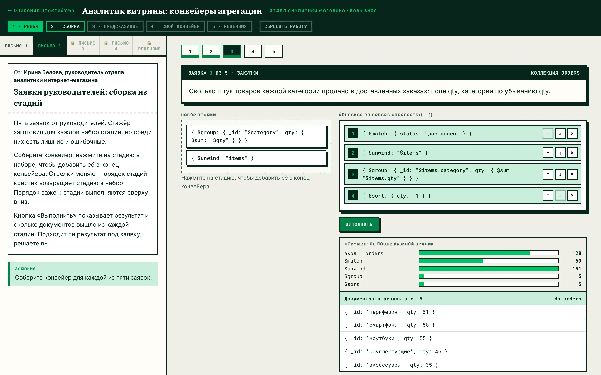
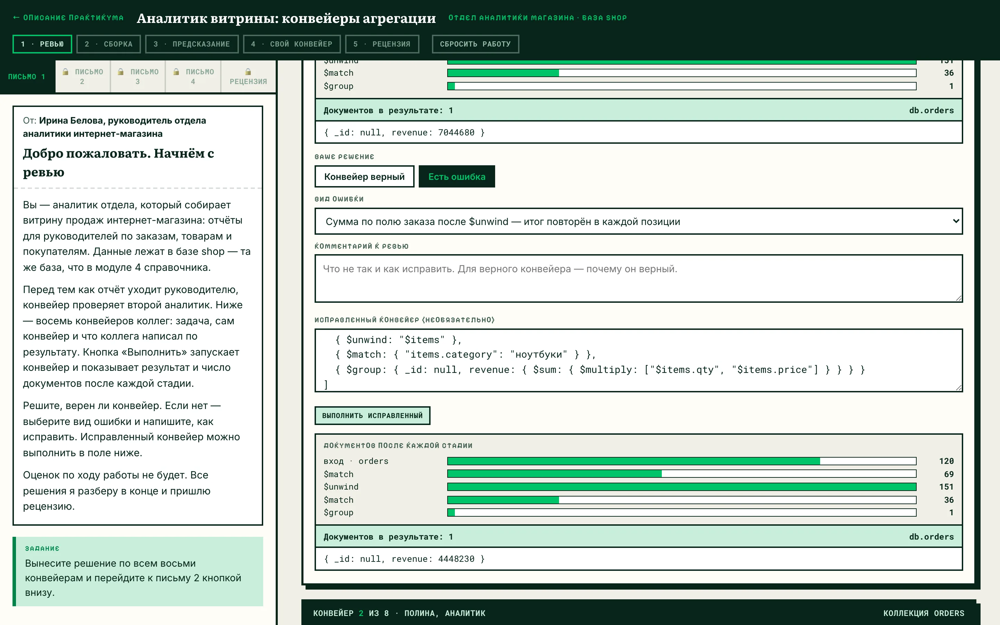
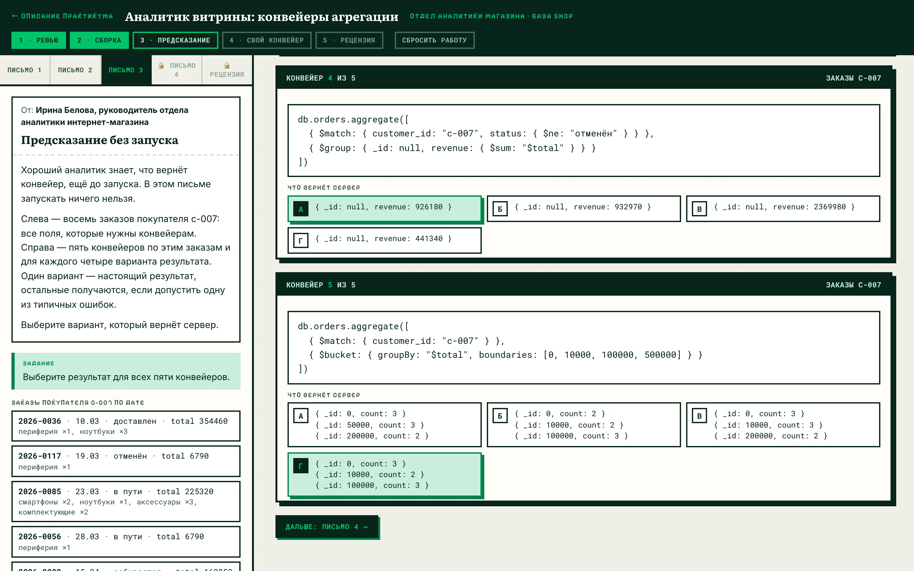
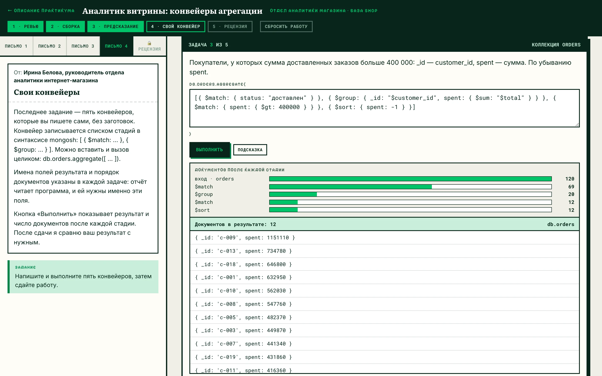
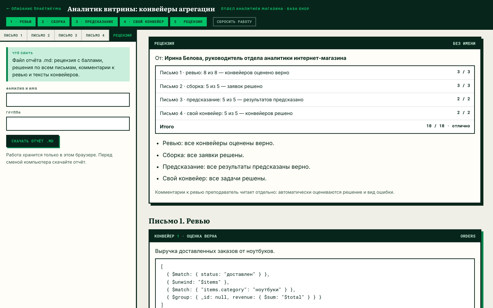

Справочник по MongoDB · модуль 4 · практикум
ПРАКТИКУМ
Аналитик витрины:
конвейеры агрегации
Ролевой практикум по конвейерам агрегации. Студент работает аналитиком отдела, который собирает витрину продаж интернет-магазина: проверяет конвейеры коллег, собирает конвейер из готовых стадий, предсказывает результат без запуска и пишет конвейеры сам. В конце руководитель отдела присылает рецензию.

§1Легенда
Отдел аналитики интернет-магазина собирает витрину продаж: отчёты для руководителей по заказам, товарам и покупателям. Данные лежат в базе shop — той же, на которой построены главы модуля 4. Конвейер для отчёта пишет один аналитик, а проверяет второй.
Студент — аналитик отдела. Задания приходят четырьмя письмами от руководителя отдела. Магазин, отдел и его сотрудники придуманы для практикума, данные взяты со стенда курса без изменений.
Проверяет конвейеры коллег, собирает и пишет конвейеры по заявкам руководителей.
Присылает четыре письма с заданиями и в конце — рецензию с баллами.
Авторы восьми конвейеров на ревью. В каждой карточке — задача, конвейер и что коллега написал по результату.
Коммерческий директор, продажи, закупки, финансовый отдел и региональный директор.
§2Четыре формата заданий
Главы модуля 4 разбирают стадии по одной. В работе аналитика стадии складываются в конвейер. Ошибки здесь чаще всего в порядке стадий и в том, какие поля доходят до следующей стадии. Каждое письмо отрабатывает этот навык в своём формате.
Восемь конвейеров: шесть с ошибками, разобранными в главах модуля, и два верных. Решение, вид ошибки, комментарий и, по желанию, исправленный конвейер.
Пять заявок. В наборе стадий есть лишние и почти верные: сортировка в обратную сторону, путь без $, граница $bucket не на месте.
Пять конвейеров по восьми заказам одного покупателя. Из четырёх вариантов выбрать настоящий результат; остальные получаются при типичных ошибках.
Пять задач без заготовок, от группировки до $facet с двумя ветками.
Во время работы баллы не показываются. Кнопка «Выполнить» выводит результат и число документов после каждой стадии, а подходит ли он под задачу, студент определяет сам. Так же устроены практикумы «Аналитик данных» модуля 2 и «Инженер платформы» модуля 3.
§3Письма по порядку
Следующее письмо открывается кнопкой «Дальше» внизу текущего. Переход не зависит от ответов. До сдачи к любому открытому письму можно вернуться и поменять ответ.
Ревью конвейеров коллег
Конвейер коллеги можно выполнить и увидеть, где теряются или появляются лишние документы: полосы показывают число документов после каждой стадии.
- решение: «Конвейер верный» или «Есть ошибка»;
- для ошибки — вид из списка восьми вариантов;
- комментарий и, по желанию, исправленный конвейер.

Сборка из стадий
Стадия добавляется в конец конвейера нажатием. Стрелки меняют порядок, крестик возвращает стадию в набор. Стадии выполняются сверху вниз, и порядок входит в задание.
Предсказание без запуска
Слева — восемь заказов покупателя c-007 со всеми нужными полями. Справа — пять конвейеров и по четыре варианта результата. Запускать конвейеры в этом письме нельзя.

Свои конвейеры
Конвейер пишется списком стадий в синтаксисе mongosh или вызовом db.orders.aggregate([ … ]) целиком. Имена полей результата и порядок документов указаны в задаче.

Рецензия
Кнопка «Сдать работу» закрывает ответы и открывает рецензию: баллы по письмам, итог и разбор каждого задания с верным конвейером и нужным результатом.

§4Где выполняются конвейеры
Конвейеры выполняются в браузере на копии базы shop со стенда курса, поэтому сервер MongoDB для практикума не нужен. Поддерживаются стадии и выражения модуля 4: $match, $sort, $limit, $skip, $project, $addFields, $set, $unset, $group с аккумуляторами, $count, $sortByCount, $unwind, $bucket, $facet, $replaceRoot, $replaceWith, $redact.
Каждый конвейер практикума и набор из 67 каверзных конвейеров сверены с сервером MongoDB 7. Совпадают результаты и коды ошибок: 40066 у $bucket без default, 28818 у пути без $ в $unwind, 40234 у поля без аккумулятора и другие. Собранный или написанный конвейер можно скопировать и выполнить на своём стенде — результат будет тем же.
§5Рецензия и оценка
Баллы рецензия считает по шкале ниже. Комментарии к ревью преподаватель читает отдельно.
| Письмо | Что считается | Баллы |
|---|---|---|
| 1 · ревью | Верно оценены конвейеры (решение и вид ошибки): 7–8 — 3 балла, 5–6 — 2, 3–4 — 1 | 3 |
| 2 · сборка | Результат конвейера совпадает с нужным: 5 заявок — 3 балла, 4 — 2, 2–3 — 1 | 3 |
| 3 · предсказание | Верно выбран результат: 5 — 2 балла, 3–4 — 1 | 2 |
| 4 · свой конвейер | Результат совпадает с нужным: 5 — 2 балла, 3–4 — 1 | 2 |
| Итого | 10 | |
Результат сравнивается с нужным по документам и их порядку; порядок полей внутри документа на оценку не влияет. Перевод в оценку: 9–10 баллов — «отлично», 7–8 — «хорошо», 5–6 — «удовлетворительно».
Что сдать: на вкладке «Рецензия» укажите фамилию, имя и группу и скачайте файл konveyer_<фамилия>.md.
§6Вопросы
Можно ли пройти практикум дома?
Да. Рабочий стол открывается в любом браузере, сервер не нужен. Работа хранится в том браузере, где её начали.
Можно ли переделать работу после сдачи?
Нет, после сдачи ответы закрыты. Сбросить работу может только преподаватель — кнопкой «Сбросить работу» с паролем.
Снижается ли оценка за число запусков?
Нет. Число запусков записывается в отчёт, на баллы оно не влияет.